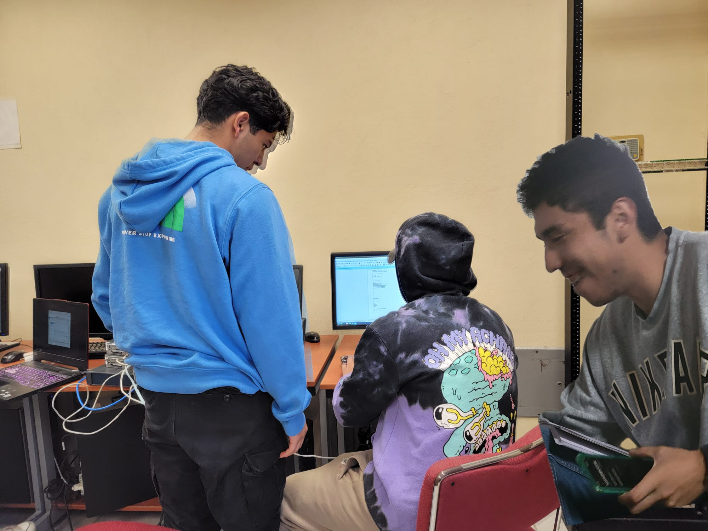

Conexión de redes WAN
T.S.U. en Infraestructura de Redes Digitales
Profesor: Ing. Gerardo Parra Rodríguez
Práctica de laboratorio: Configuración de una red pequeña (Home Office)

Jared Maximiliano Balderas Dominguez
Juan Pablo Lopez Ramirez
Fabio Alonso Sanchez Garcia
Fecha: 15/10/2024